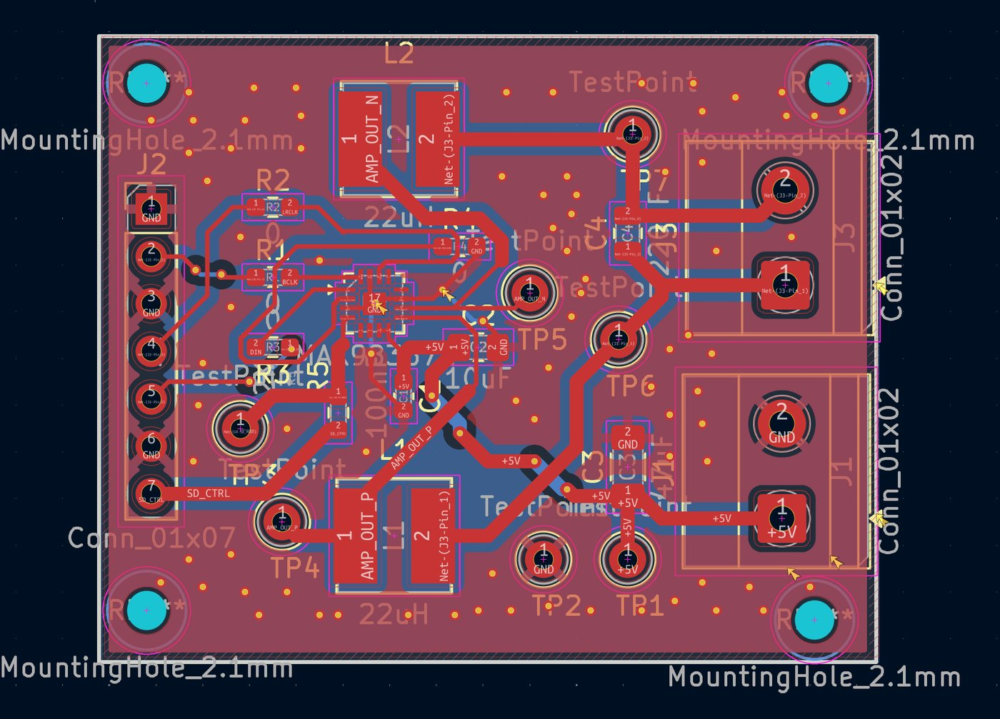
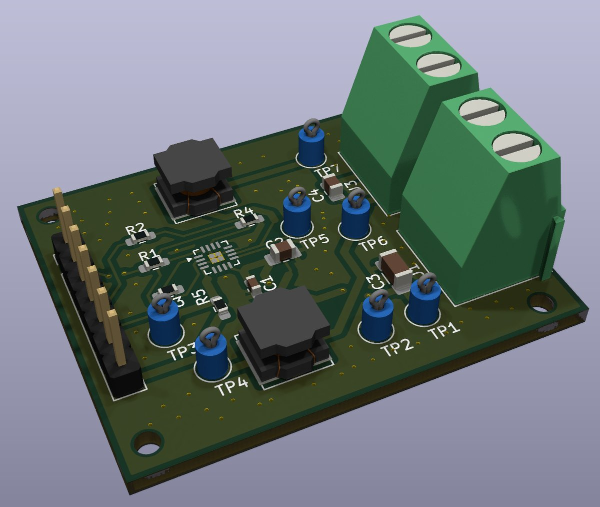

Class D Amplifikatörde EMI ve LC Çıkış Filtresi: MAX98357A ile PCB Tasarımım
İçindekiler
Class D ses amplifikatörleri çok verimli ama bu verimin bir bedeli var: çıkışta sesin yanında yüksek frekanslı anahtarlama bileşenleri de bulunuyor. Bu projede bu sorunu inceledim ve KiCad'de, MAX98357A I²S Class D amplifikatör entegresini ve bir diferansiyel LC çıkış filtresini içeren 2 katmanlı bir PCB tasarladım.


Problem: anahtarlama gürültüsü ve uzun kablolar
Class D amplifikatör, çıkış transistörlerini ses bandının çok üzerindeki bir frekansta açıp kapatır; ses bilgisi bu darbelerin genişliğinde taşınır. Hoparlör yüksek frekansları zaten duyurmaz, ama bu bileşenler hoparlör kablolarında dolaşmaya devam eder. Kablo uzadıkça bir anten gibi davranır ve yüksek frekanslı enerjiyi çevreye yayabilir; bu da yakındaki elektronik sistemlerde elektromanyetik girişime (EMI) yol açabilir.
MAX98357A, kenar hızı kontrolü sayesinde kısa kablolarda filtresiz çalışacak şekilde tasarlanmış bir entegre. Benim merak ettiğim, kablo uzadığında bir çıkış filtresinin ne kadar fark yaratacağıydı. Bu yüzden kartı filtreli tasarladım ve filtrenin her iki tarafına ölçüm noktaları koydum.
Çözüm: diferansiyel LC filtre
MAX98357A'nın çıkışı BTL (köprü) yapısında: hoparlör iki çıkış arasına bağlanıyor, ikisi de anahtarlanıyor. Bu yüzden filtreyi de simetrik kurdum: her çıkış hattına bir 22 µH bobin, filtrelenmiş iki çıkış arasına bir 220 nF kondansatör.
Hesap: kesim frekansı
Diferansiyel sinyal açısından akım iki bobinden de geçer, yani kondansatör toplam 2 × 22 = 44 µH ile birlikte çalışır:
Bu, 20 kHz'lik ses bandının üzerinde, anahtarlama frekansının ise çok altında. İkinci dereceden bir filtre olduğu için f₀'ın üzerinde zayıflatma on katta 40 dB artıyor: ideal hesapta 500 kHz'de sinyal yaklaşık -40 dB, yani gerilim olarak yaklaşık 100'de 1'ine iniyor.
Grafikte gözüme çarpan bir nokta oldu: filtrenin sönümü hoparlör empedansına bağlı. 8 Ω hoparlörde Q ≈ 0,57 ve 20 kHz'deki düşüş yaklaşık 0,8 dB; 4 Ω hoparlörde ise Q ≈ 0,28 ve 20 kHz'de yaklaşık 4,2 dB düşüş görünüyor. Gerçek bir hoparlörün empedansı frekansla değiştiği için bu hesabı LTspice'ta ve ölçümle doğrulamak bir sonraki adımım.
PCB tasarımında EMI için yaptıklarım
- Kısa yüksek akım yolları: bobinleri entegrenin çıkış pinlerine yakın yerleştirdim; anahtarlanan akımın dolaştığı alanı küçük tutmak yayılan gürültüyü azaltıyor.
- GND düzlemleri ve stitching via'lar: iki katmanda da toprak dökümü var; katmanları çok sayıda via ile birbirine bağlayarak dönüş akımları için kısa ve düşük empedanslı bir yol sağladım.
- Dekuplaj: 100 nF ve 10 µF kondansatörler entegrenin besleme pinine yakın.
- Simetri: OUT_P ve OUT_N hatlarını ve iki bobini birbirine benzer şekilde yönlendirdim.
- Ölçülebilirlik: filtre öncesi (TP4, TP5) ve sonrası (TP6, TP7) çıkışlar, 5 V (TP1), GND (TP2) ve SD_MODE (TP3) için test noktaları ekledim.
Hazır bir amplifikatör modülü kullanmak yerine entegreyi doğrudan karta yerleştirdim; böylece filtrenin ve yerleşimin her detayını kendim seçebildim.
Teknik detaylar
Sonraki adım
Tasarım aşaması tamamlandı. Sırada filtreyi LTspice'ta farklı hoparlör yükleriyle simüle etmek, sonra kartı üretip osiloskopla filtre öncesi ve sonrası sinyalleri ölçmek var. Farklı kablo uzunluklarında filtreli ve filtresiz durumu karşılaştırıp sonuçları burada paylaşacağım.
Projeyi LinkedIn'de de paylaştım. Benzer bir kart ya da özel bir PCB tasarımı için PCB tasarım hizmeti sayfama göz atabilirsin.